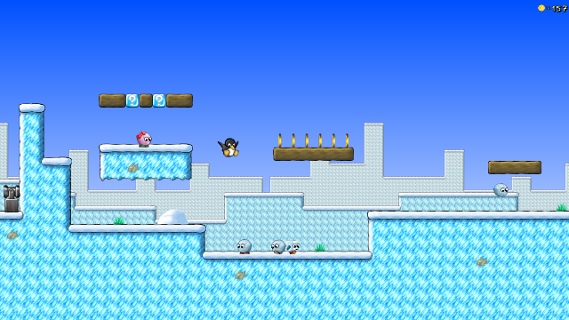
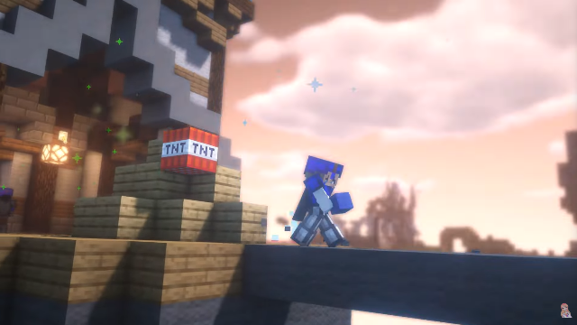
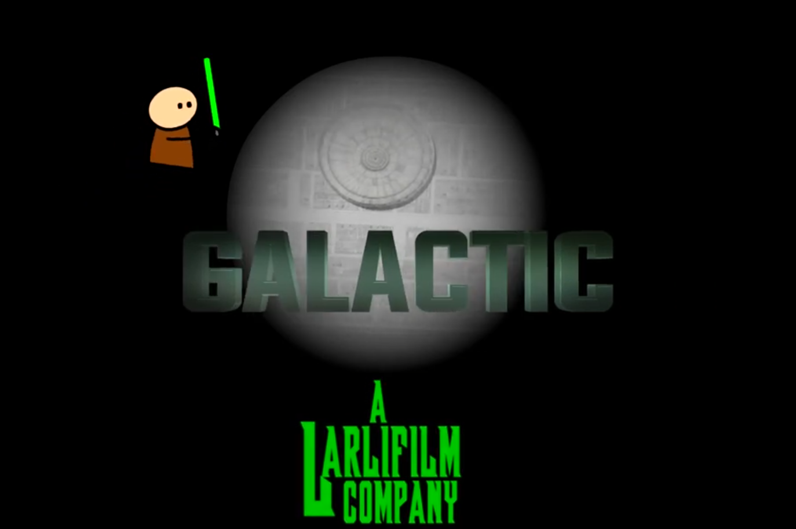

Childhood
From an early age, I was always interested in computers. Whilst growing up I started playing a rip-off Linux version of Super Mario Bros called “Super-Tux” in 2008 on the slowest computer known to existence. From then on, I started to discover more games, with one very special game shaping who I am today, Minecraft. It allowed me to connect with other people through Multiplayer servers, which ultimately sparked my interest in creating and running my own Minecraft server. With only basic HTML programming knowledge at the age of 10, I co-ran Minecraft servers alongside other players around my age at the time. As you can guess, the servers didn’t last very long and were closed after a few months (surprise surprise!)
Teenage Years
YouTube
During my tween and early teenage years, I developed a passion for video editing and content creation. This was around 2016, where YouTube was still in its prime. You probably recall some of the viral videos and trends such as bottle flipping, the whip/nae nae, and the mannequin challenge dominating the platform at this time. I created a successful Minecraft YouTube channel which gained over 4000 subscribers over the next 5 years, ending after I lost interest in hardcore gaming and had to lock in during my final years of school 🙁.
High School
In school, I also expanded my interests in video editing by taking Multimedia in Year 9 and 10, where I created many projects ranging from stick figure Star Wars animations to flying car company websites, allowing me to expand my skills and knowledge. I further picked Information Processes and Technology (IPT) as an elective on the HSC, which taught me how computers functioned in the real world. Inspired by my past experience, I applied for a double degree in IT and Business at UTS as a joke, thinking I wouldn’t get in. Earlier this year when I received the offer, I was over the moon, as it has allowed me to learn new skills such as Python and Java programming.
